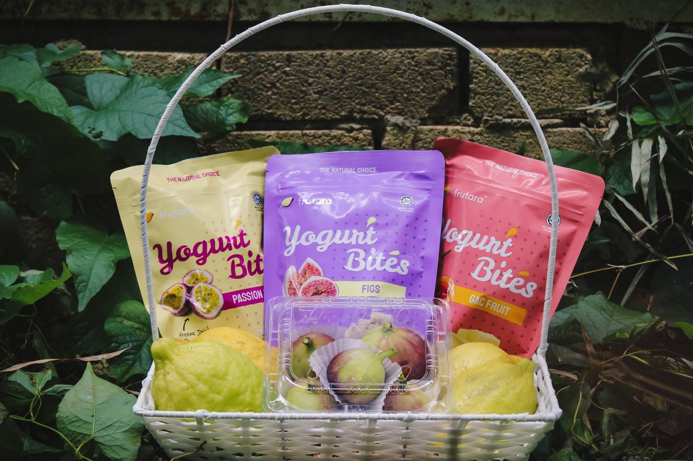

Farmer · Agro-Tourism Advocate · Product Developer

As the farmer, Cheku Asjad bin Cheku Sabri brings with him a strong academic foundation and diverse professional experience that elevates every aspect of the farm's operations. Armed with a degree from UMS and practical experience from both Kuala Lumpur and Perlis, he oversees a wide range of responsibilities that go beyond conventional farming.
On a daily basis, he oversees the planting and maintenance of over 300 varieties of plants and vegetables, coordinates harvesting and product processing, and leads the development of health-based products derived from the farm's unique and rare plants.
Beyond his operational role, he serves as the primary agro-tourism guide, personally leading farm tours and educating visitors about the plants, their origins, scientific properties, and health benefits.
From planting and transplanting to harvesting and product processing — Cheku Asjad bin Cheku Sabri manages the entire agricultural lifecycle of the farm independently and efficiently.
Conducts research using scientific journals before cultivating each plant, ensuring every crop carries genuine, validated health benefits for consumers and buyers.
Personally leads farm tours for local and international visitors, sharing in-depth knowledge about rare plant species, their uses, and their significance in traditional medicine.
Manages relationships with international clients, drives repeat orders, and develops specialty products for niche markets including fine dining and health-conscious consumers.
Develops innovative health-based products derived from rare farm plants, including items targeting skin care, heart health, and vision improvement — all validated through academic research and scientific journals.
Actively shares agricultural knowledge with the local community, educating visitors and the public about the scientific value of traditional medicinal plants native to Perlis, inspiring the next generation of farmers.
Cheku Asjad bin Cheku Sabri's contribution to Perlis extends far beyond the boundaries of the farm. Through his dedication and passion, he has transformed a simple agricultural plot into a thriving agro-tourism destination that attracts visitors from major cities and international countries.
One of the farm's signature products contains lycopene levels approximately 80 times higher than a regular tomato — equivalent to consuming 8 kilograms of tomatoes in a single small serving.
This remarkable discovery was validated by Cheku Asjad bin Cheku Sabri through his own academic research, reinforcing his dual role as both a practitioner and a scholar of modern agriculture.
Customers, including individuals recovering from serious health conditions, have reported significant positive changes after consuming the farm's products.
Cheku Asjad bin Cheku Sabri's vision for the future is clear — to make the farm more accessible, more educational, and more impactful, creating a space where visitors can learn, experience, and benefit from the wonders of Perlis agriculture.
"I want this farm to be more open to everyone. We want to expand the agro-tourism aspect, highlight our unique products like gac, and attract more visitors so we can increase income and share the beauty of what Perlis has to offer with the whole world."
— Cheku Asjad bin Cheku Sabri, Farmer
His story — from a Diploma student at UiTM, to a Degree graduate from UMS, to a vegetable farm worker in Kuala Lumpur, and finally to an agro-tourism manager in Perlis — is a powerful testament to how education, dedication, and the courage to embrace new opportunities can create meaningful contributions to a community and its local industry.